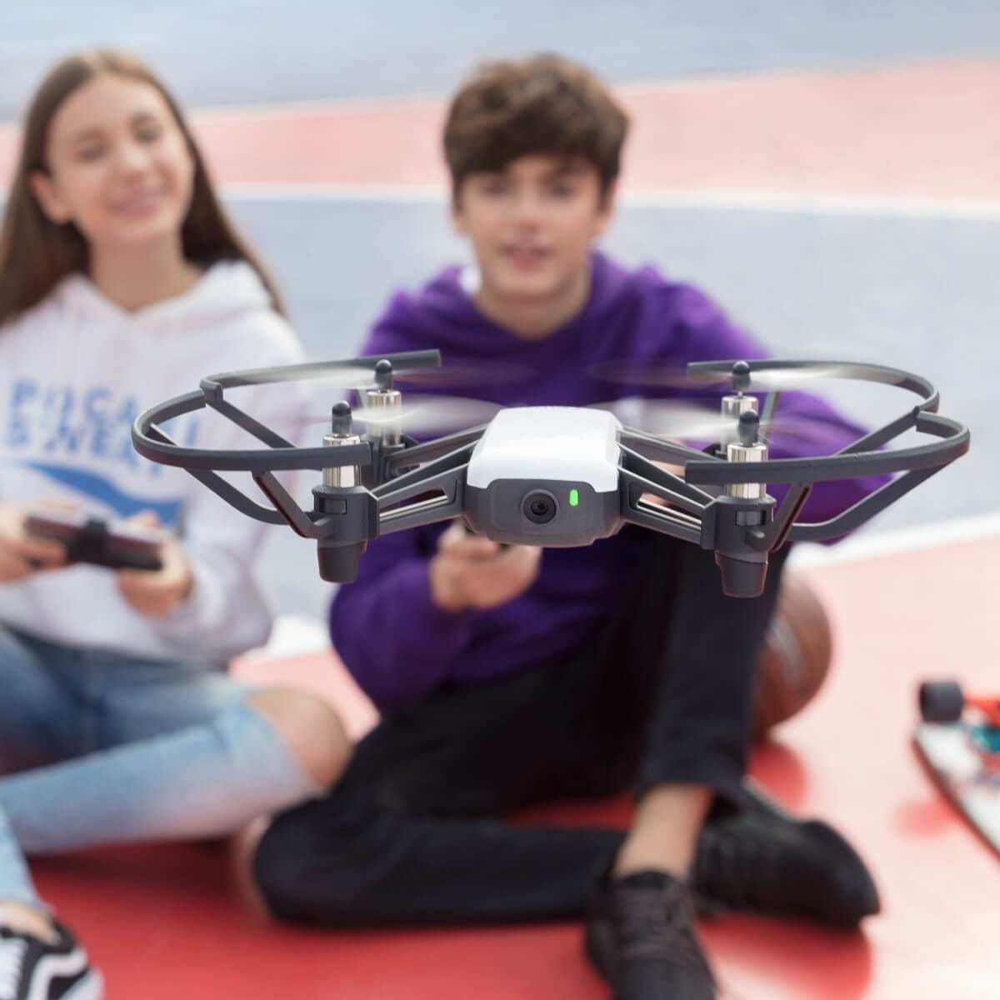
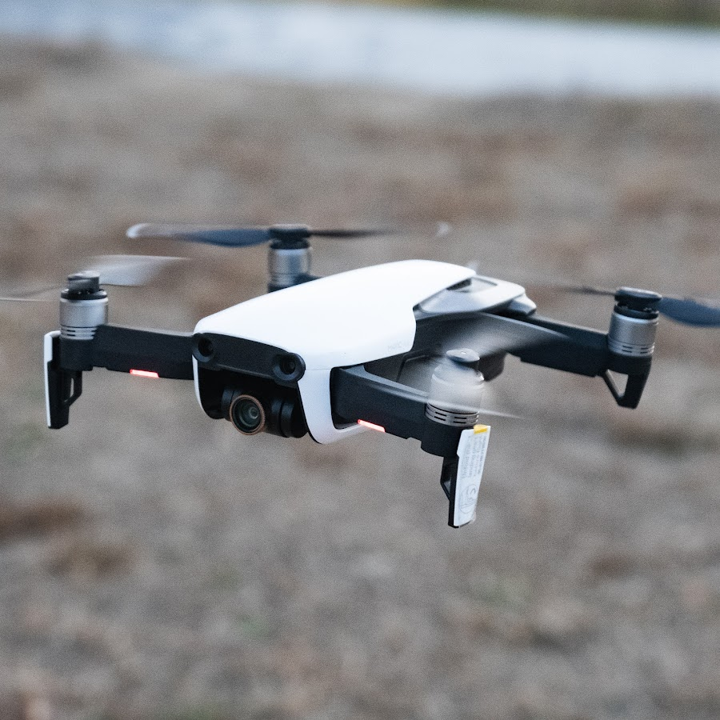

Le drone TELLO

Que vous soyez dans un parc, au bureau ou à la maison, vous pouvez décoller à tout moment et découvrir le monde avec un œil nouveau. Tello est doté de deux antennes qui permettent une transmission vidéo parfaitement stable et d’une batterie de grande capacité pour des durées de vol impressionnantes.
Temps de vol
13 min
Distance de vol
100 m
Caméra
720P
Transmission
2 antennes
Le Mavic Air
Le Mavic est plus petit, plus léger et plus facile à transporter avec soi grâce à son design pliable. Son nouveau système de transmission OcuSync a une plus grande portée et une résolution de 1080p. Le Phantom 4 étant plus grand, sa vitesse maximum est plus élevée et il résiste à des vents plus forts.